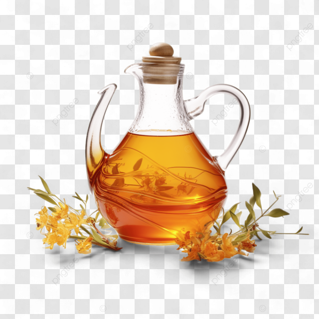

Back
Mjodur

Description
No Viking feast would be complete without mead, the classic honey-based alcoholic drink.
Ingredients
- 1 gallon water
- 1.5 lbs honey
- 1 packet yeast
Steps
- In a large pot, heat water and honey until well combined. Do not boil.
- Cool the mixture to room temperature, then add yeast.
- Pour into a fermentation container, seal, and allow to ferment for at least six weeks before bottling.
Drink up!